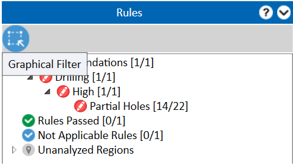
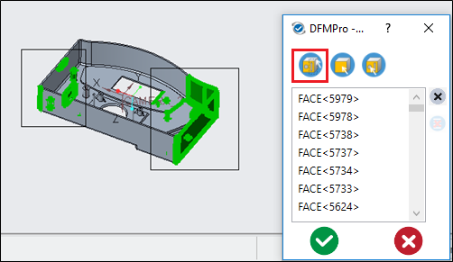
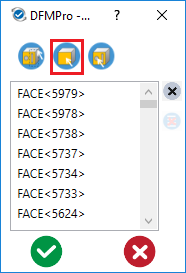
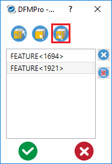
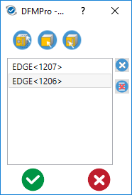
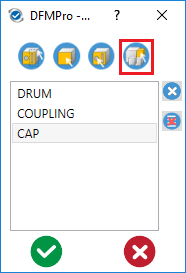

グラフィカルフィルターコマンドは、［Rules］グループボックス内に表示されるルール違反の件数をフィルタリングします。失敗結果は、DFMPro - グラフィカルフィルターダイアログボックスで選択されたオプションに基づいてフィルタリングされます。
この機能の目的は以下のとおりです：

注記:
干渉検出に関連する違反については、Part Selection フィルタ方法の使用を推奨します。
以下のフィルタ方法があります：
マウスでウィンドウを作成（下図参照）し、グラフィックスエリアから複数の目的のフィーチャーを選択します。ウィンドウ内に含まれるフィーチャーは、DFMPro - グラフィカルフィルターダイアログボックスに表示されます。
グラフィックスエリアでのウィンドウ選択に基づいて、対応する結果としてルール違反の一覧が表示されます。

注記:
1 回の選択で選択できるエンティティ数は最大 14,000 です。
Face/Edge Entity Selection オプションでは、Ctrl キーを使用してグラフィックスエリアから複数の面またはエッジを選択します。
マウスの中ボタンをクリックして選択を確定します。
選択後、OK ボタンをクリックします。
選択した面またはエッジが選択ボックスに表示されます。
選択内容に基づいて、対応する結果としてルール違反の一覧が表示されます。

注記:
グラフィックスエリアでマウスを使用してウィンドウを作成し、複数のフィーチャーを選択できます。
Feature Selection オプションでは、Ctrl キーを使用してモデルツリーから複数のフィーチャーを選択します。
マウスの中ボタンをクリックして選択を確定します。
選択後、OK ボタンをクリックします。
選択したフィーチャーが選択ボックスに表示されます。
選択内容に基づいて、対応する結果としてルール違反の一覧が表示されます。

注記:
ユーザーは、失敗結果の一覧をフィルタリングしている最中でも、エッジ、面、フィーチャーを追加できます。

このオプションは、DFMPro がアセンブリ、溶接、またはチューブのルールに対して解析された場合にのみ表示されます。
パーツ／アセンブリ選択オプションでは、Ctrl キーを使用して、モデルツリーまたはグラフィックスエリアから必要なパーツまたはアセンブリを選択します。
マウスの中ボタンをクリックして選択を確定します。
選択後、OK ボタンをクリックします。
選択したパーツまたはアセンブリが選択ボックスに表示されます。
選択内容に基づいて、対応する結果としてルール違反の一覧が表示されます。


|
右側のルール違反ペインに結果一覧を表示します。 |
|
|
ダイアログボックスを閉じるために使用します。 |
|
|
選択されているすべてのエンティティをクリアするために使用します。 |
|
|
選択したエンティティを削除するために使用します。 |